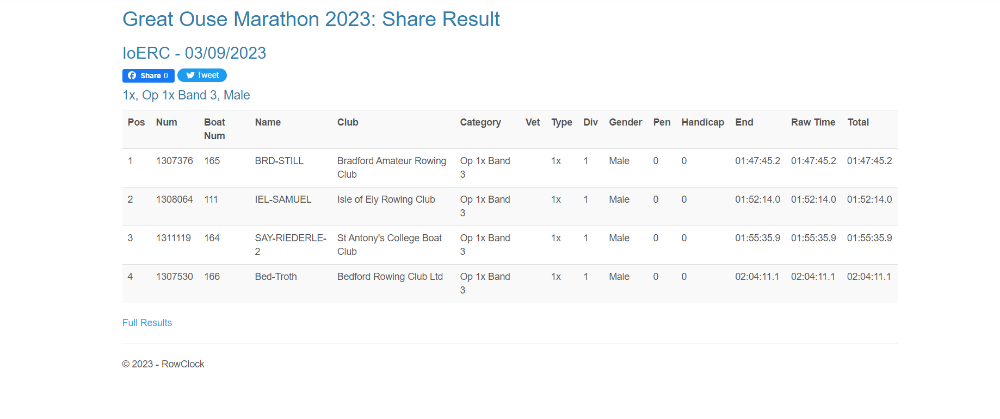

Overall Totals
Distance Rowed on River: 2853.29 km
Distance Rowed on Erg: 1675.08 km
Distance Rowed on Ocean: 19.92 km
Number of Turns Completed: 4152
Calories Burned: 330,410 kcal
The primary reason I chose "Aire Wave" as my Atlantic alias is rooted in the countless hours I've spent rowing along the river Aire. To prepare for the physical demands of the challenge, I joined the Bradford Amateur Rowing Club during the summer of 2021, aiming to enhance my sculling proficiency for long distances. Ironically, this particular stretch of the river Aire, located near the Weir in Shipley Saltaire, is one of the shortest rowing courses merely 700 meters upstream, often involving numerous spins. Below, you'll find graphs and stats showcasing my current rowing metrics since Nov 13th 2022.
Distance Rowed on River: 2853.29 km
Distance Rowed on Erg: 1675.08 km
Distance Rowed on Ocean: 19.92 km
Number of Turns Completed: 4152
Calories Burned: 330,410 kcal

GIF 2: A GIF Timelapse of the callouses and blisters due to endurance rowing up to 16/07/2023.

GIF 1: A spatial map GIF depicting how far I have travelled across the route to Antigua from La Gomera Virtually.
In Early September 2023, I took part in my first British Rowing race, the Great Ouse Marathon, a unique 22km event on the British Rowing calender. This was the first time I had been on another river with a stretch of navigable water longer than 700m. It was a unique experience, navigating bridges, overtaking crews and dealing with pleasure cruises. The discipline of doing long outings every Sunday Morning all seasons and the drive to go faster each time led to me winning my category and getting a Crabapple Tree for it! However, improvements can be made to go even faster by optimising the steering on the river and dealing with butt pain because mine was so painful that it impeded my pace.
